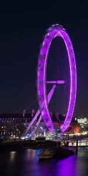
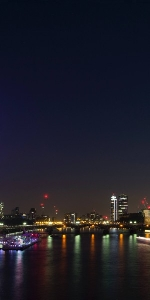
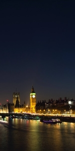

Il mio Viaggio a Londra



Le mie spese
| Numero |
Descrizione |
Costo |
| 1 |
Biglietto aereo |
120€ |
| 1 |
Biglietto aereo |
120€ |
| 1 |
Biglietto aereo |
120€ |
| Totale |
|
360€ |
Cose da fare:
- Visitare la Towe of London ✗
- Visitare greenwich ✓
- Ascoltare un artista di strada a Covent Garden ✓
- Mangiare il tipico Fish and Chips inglese ✗
Info utili:
-
Numeri utili di emergenza
- ☞ 999 - emergenza
- ☞ 101 - numero Polizia
- ☞ 111 - numero Assistenza medica
-
Hotel
- ☞ Nome Hotel: Buckingham Palace
- ☞ Indirizzo Hotel: Westminster, London SW1A 1AA, Regno Unito
-
Aereo
- ☞ Volo di Andata: Y1234X, ore 9.30 da Milano Malpensa
- ☞ volo di Ritorno: Y1236X, ore 18.30 da London Heathrow